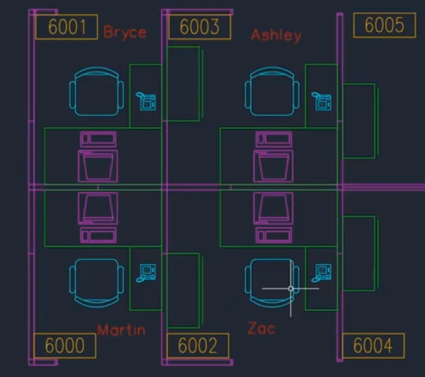

When 2D CAD is good enough
Marlan Systems has been providing CAD and Design services to clients across Ireland for almost two decades.
With all the attention over the past decade focussed on Building Information Modeling you would be forgiven for thinking that traditional 2D Computer Aided Design is dead and buried. Not so.
For one thing, the high cost of entry prevents many smaller organisations from being able to justify the cost of a full on BIM implementation. Traditional 2D CAD still has a strong hold in the SME sector, for example in electrical engineering design.
Architectural firms engaged in the domestic and small scale commercial sectors still rely heavily on 2D CAD because small project teams running smaller scale projects can utilise 2D CAD effectively.
Our team of independent CAD technicians can produce your designs remotely or in house alongside your own staff. It's also a cost effective way to scale your design team for those times when the workload justifies another designer but only short term.
Contact us to discuss your requirements